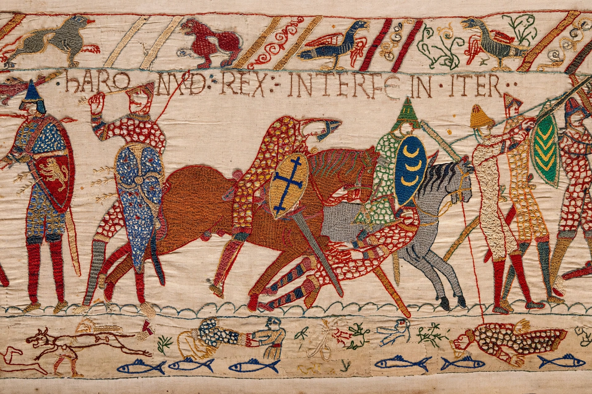

Normans
| Normans | |
|---|---|
 | |
| Origin | Norse settlers in Neustria (Normandy), from 911 |
| Language | Old Norman (Romance), from Old Norse roots |
| Major conquests | England (1066); Southern Italy and Sicily; Antioch (1098) |
The Normans (from "Northmen") were a people who emerged in the early 10th century from the settlement of Norse Vikings in the region of northern France that became known as Normandy, where they intermarried with the local Frankish and Gallo-Roman population. Within a few generations they had adopted the French language, Christianity, and feudal institutions, while retaining a formidable military energy that carried them to conquests in England, Italy, Sicily, and the Levant.
Origins
In 911 the Frankish king Charles the Simple granted the Viking leader Rollo lands around Rouen (Treaty of Saint-Clair-sur-Epte) in return for defending the coast against other Vikings and accepting baptism. Rollo's duchy — Normandy — attracted further Scandinavian settlement, but its rulers rapidly Frankified: by the mid-10th century Norse survived mainly in place-names of the Cotentin and Pays de Caux. The Norman dukes built a tightly governed principality with strong cavalry forces and a network of castles.
Conquests
England. In 1066 Duke William of Normandy defeated King Harold Godwinson at the Battle of Hastings and was crowned William I of England. The Norman Conquest replaced the English aristocracy, introduced Anglo-Norman French as the language of court, and reshaped English landholding, architecture, and language.
Italy and Sicily. Norman pilgrims and mercenaries reached southern Italy from about 1017 and, under leaders such as the sons of Tancred of Hauteville, seized Apulia and Calabria from the Byzantines and Lombards. Robert Guiscard became Duke of Apulia in 1059; his brother Roger conquered Sicily from its Muslim rulers between 1061 and 1091. Their great-nephew Roger II united the Norman south into the Kingdom of Sicily in 1130, a state famed for its Arab-Greek-Latin court culture.
The Crusades. Normans were prominent in the First Crusade: Bohemond of Taranto, Guiscard's son, founded the Principality of Antioch in 1098, and Norman-descended dynasties ruled several Crusader states.
Culture and legacy
The Normans were notable assimilators, adopting the languages and institutions of the peoples they conquered while contributing distinctive styles of Romanesque architecture (Durham Cathedral, Monreale), castle-building, and administration (the Domesday Book of 1086). Norman adventurers and dynasties also shaped Ireland after 1169 and the borders of Scotland and Wales.